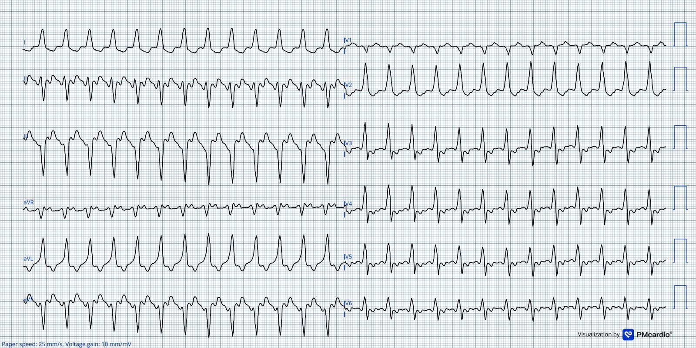
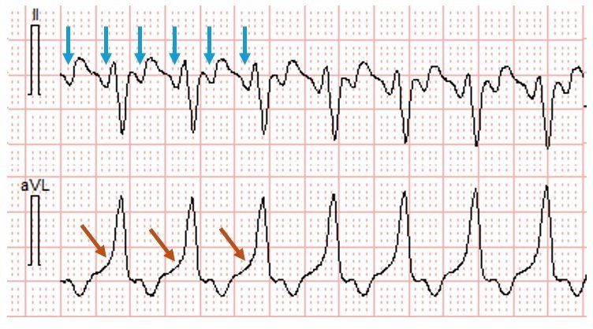
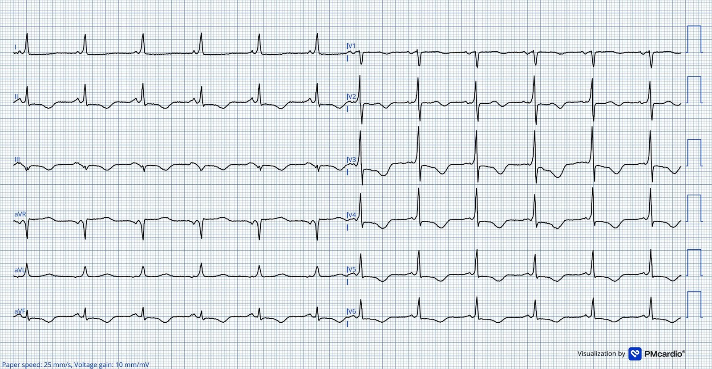
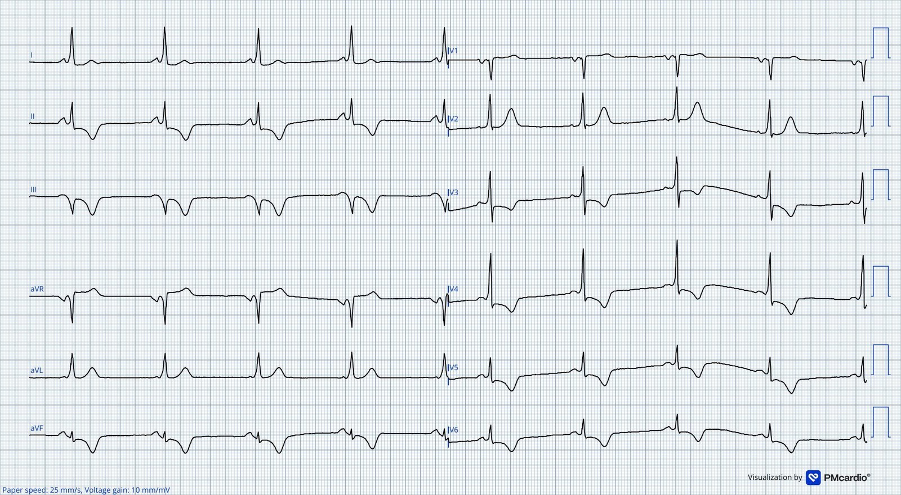
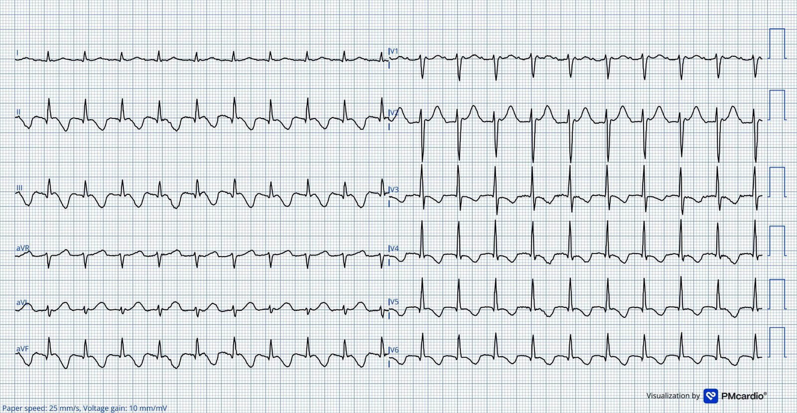
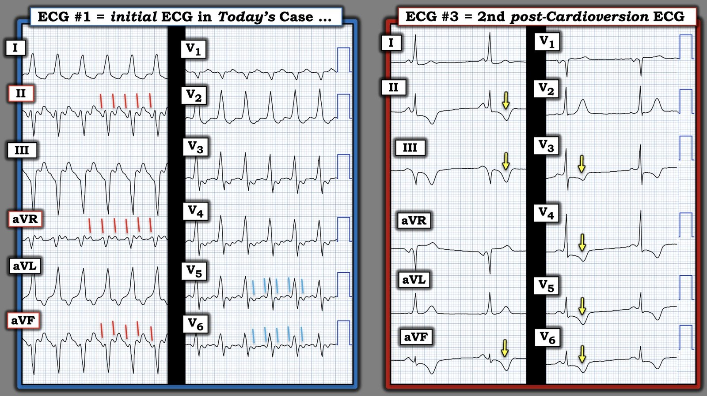

10/05/2026 — Bạn có giải được nhịp nhanh QRS rộng bất thường này không?
Bản dịch tiếng Việt của bài "Can you figure out this unusual Wide Complex Tachycardia?" – Dr. Smith’s ECG Blog. Giữ nguyên toàn bộ 6 hình ảnh của bản gốc.
Tác giả: Magnus Nossen
Tôi đang xem lại các điện tâm đồ trước đây của một bệnh nhân cho một nghiên cứu đang tiến hành thì bắt gặp các bản ghi của ca hôm nay. Bệnh nhân là một người đàn ông ngoài 70 tuổi (70s), có tiền sử phẫu thuật sửa phình động mạch chủ bụng, tăng huyết áp và COPD mức độ nhẹ.
Ông bị hồi hộp đánh trống ngực từng cơn trong vài tuần, và khi triệu chứng tái phát, ông đã liên hệ với bác sĩ chăm sóc ban đầu của mình. Ông được phát hiện có nhịp tim nhanh, nhưng ngoài tần số tim khoảng 150 lần/phút (bpm), các dấu hiệu sinh tồn khác không có gì đáng chú ý. Ông được chuyển đến khoa cấp cứu (ED), nơi ghi được điện tâm đồ dưới đây. Không có điện tâm đồ cũ nào để so sánh. Bạn sẽ diễn giải điện tâm đồ này như thế nào?
Điện tâm đồ # 1 ghi tại khoa cấp cứu


Điện tâm đồ trong ca hôm nay cho thấy một nhịp nhanh QRS rộng (wide-complex tachycardia) với tần số 146 lần/phút (bpm) và thời gian QRS hơi khó đánh giá, nhưng ít nhất là > 130 ms. Hình thái QRS không phù hợp với bất kỳ hình ảnh blốc nhánh điển hình nào.
Bệnh nhân ổn định; điều này cho bạn thời gian để suy nghĩ và tiến hành một cách tiếp cận chẩn đoán có cấu trúc. Bạn sẽ tiến hành thăm dò chẩn đoán như thế nào?
Có một số thuốc và nghiệm pháp có thể giúp phân biệt các nguyên nhân của một nhịp nhanh đều. Một nhịp nhanh QRS rộng (WCT) có thể có nguồn gốc từ thất, hoặc là nhịp trên thất kèm blốc có sẵn từ trước hoặc dẫn truyền lệch hướng liên quan tần số. (Smith: ngoài ra, dĩ nhiên, QRS rộng có thể do tăng kali máu hoặc do chẹn kênh Na). Nếu WCT là do một nhịp nhanh trên thất vào lại kèm một bất thường dẫn truyền gây giãn rộng QRS, thì các can thiệp tác động lên trương lực phế vị hoặc dẫn truyền qua nút AV có thể vừa có giá trị chẩn đoán vừa có giá trị điều trị nhờ cắt đứt vòng vào lại.
Nếu nhịp nền là cuồng nhĩ, chính các thuốc hoặc nghiệm pháp này có thể giúp chẩn đoán bằng cách làm lộ ra sóng cuồng nhĩ, nhưng không nhất thiết sẽ cắt được rối loạn nhịp.
Suy nghĩ của tôi: Khi nhìn thấy điện tâm đồ #1 — tôi nghĩ hình thái QRS phù hợp với rối loạn nhịp có nguồn gốc từ thất. Sau đó tôi để ý chuyển đạo II, mà tôi khá chắc chắn là cho thấy hoạt động nhĩ với tần số gấp đôi tần số thất. Chuyển đạo aVL cũng thu hút sự chú ý của tôi vì có pha lên ban đầu của sóng R rất chậm.
Sự hoạt hóa thất ban đầu chậm như vậy sẽ là bất thường đối với cuồng nhĩ dẫn truyền AV 2:1. Khi dẫn truyền qua nút AV 2:1 — hệ thống dẫn truyền tham gia ngay từ đầu quá trình hoạt hóa thất và pha lên ban đầu của QRS thường không chậm đến mức này.
- Điện tâm đồ này vừa trở nên thú vị hơn nhiều! Làm sao chúng ta có thể giải thích được sự hoạt hóa thất ban đầu rất chậm ở chuyển đạo aVL cùng với dẫn truyền AV 2:1?
Hình 1


Hình 1 cho thấy đoạn trích chuyển đạo II và chuyển đạo aVL từ điện tâm đồ ban đầu. Các mũi tên dọc màu xanh lam chỉ hoạt động nhĩ ở chuyển đạo II. Các mũi tên màu cam chỉ sự hoạt hóa thất ban đầu rất chậm ở chuyển đạo aVL.
Tôi không nghĩ ra được lời giải thích khả dĩ nào khác ngoài việc nhịp này là cuồng nhĩ với dẫn truyền 2:1 qua một đường phụ (accessory pathway). Dù vậy, có vẻ như lẽ ra tình trạng tiền kích thích (preexcitation) đã phải được ghi nhận từ trước ở người đàn ông 70 tuổi này, người đã nhiều lần đến bệnh viện.
- Tôi đã xem hồ sơ bệnh án để biết chuyện gì đã xảy ra trong lần khám này. Bệnh nhân được nhập khoa tim mạch. Không có nghiệm pháp chẩn đoán hay thuốc nào được thử. Tôi sẽ cân nhắc dùng chuyển đạo Lewis để cố gắng nhìn rõ hơn hoạt động nhĩ. Nếu cách đó không giúp được, tôi sẽ cố gắng ghi điện tâm đồ qua thực quản. Cả hai đều không được thực hiện.
Bệnh nhân được nhập viện và theo dõi từ xa (telemetry). Tần số tim duy trì ổn định suốt đêm. Ngày hôm sau, bác sĩ tim mạch diễn giải nhịp này là cuồng nhĩ 2:1. Không có nhận xét nào về hình thái QRS. Siêu âm tim qua thực quản (TEE) được thực hiện và đã loại trừ huyết khối trong nhĩ. Sau đó bệnh nhân được sốc điện chuyển nhịp.
Các điện tâm đồ ghi sau sốc điện chuyển nhịp




Cả hai điện tâm đồ trên đều cho thấy rõ tiền kích thích. Cực tính sóng delta, trục QRS và vùng chuyển tiếp R/S tương tự như ở điện tâm đồ ban đầu.
Hai điện tâm đồ này cho thấy rõ tiền kích thích, khiến bản ghi ban đầu có giá trị chẩn đoán cuồng nhĩ 2:1 dẫn truyền qua một đường phụ!
Khá bất ngờ là hình ảnh tiền kích thích đã không được ai nhận xét! Bệnh nhân được bắt đầu dùng amiodarone và được chuyển đi triệt đốt qua ống thông điều trị cuồng nhĩ.
- Trong thời gian chờ đến thủ thuật triệt đốt, ông đã phải nhập viện vì hồi hộp đánh trống ngực tái phát.
- Đáng chú ý, amiodarone đã làm chậm tần số cuồng nhĩ.
- Điện tâm đồ dưới đây được ghi trong một lần nhập viện như vậy, và giờ cho thấy các phức bộ QRS hẹp. Khi độ dài chu kỳ cuồng nhĩ tăng lên, nút AV đã có thể dẫn truyền theo kiểu 2:1, tạo ra QRS hẹp ở tần số cuồng nhĩ chậm hơn.


Ở điện tâm đồ này có cuồng nhĩ không điển hình với dẫn truyền AV 2:1 (điện tâm đồ ở trên cùng là dẫn truyền 2:1 qua đường phụ, vì lúc đó cuồng nhĩ quá nhanh so với khả năng dẫn truyền của nút AV). Tần số thất ~120 lần/phút. Cuồng nhĩ không điển hình thể hiện rõ qua hình ảnh giả r’ (pseudo r’) thấy ở chuyển đạo V1.
Ở bệnh nhân người lớn và người cao tuổi, nút AV có thể biểu hiện khoảng PR kéo dài dần ở tần số tim cao hơn. Sự chậm trễ tại nút AV phụ thuộc tần số này có thể cho phép xung điện ưu tiên dẫn truyền qua đường phụ, vốn có tốc độ dẫn truyền nhanh hơn. Hiện tượng này giải thích vì sao tiền kích thích có thể trở nên rõ hơn khi tần số tim tăng.
- Điều này nhiều khả năng giải thích vì sao điện tâm đồ ban đầu biểu hiện hình ảnh tiền kích thích ở tần số tim 146 lần/phút (bpm), trong khi ở điện tâm đồ phía trên, với tần số tim thấp hơn, lại thấy các phức bộ QRS hẹp. Ở tần số chậm hơn, dẫn truyền qua nút AV vẫn đủ nhanh để khử cực thất trước khi phần đóng góp của đường phụ kịp biểu hiện.
- Một cách giải thích khả dĩ khác là xung điện hoạt hóa nút AV theo hướng ngược dòng, khiến nút AV trơ với sóng cuồng nhĩ đi xuôi dòng. Điều này sẽ tạo thuận lợi cho dẫn truyền chỉ đi xuống qua đường phụ.
= = =
Phần bổ sung: Adenosine có thể được dùng để làm lộ sóng cuồng nhĩ trong cuồng nhĩ dẫn truyền 2:1. Tuy nhiên, trong ca hôm nay — nếu adenosine được dùng với mục đích chẩn đoán thì sẽ không làm lộ được sóng cuồng nhĩ, vì các xung vẫn sẽ dẫn truyền qua đường phụ.
Cuối cùng bệnh nhân được làm thủ thuật thăm dò điện sinh lý (EP), trong đó ghi nhận được cả cuồng nhĩ điển hình và cuồng nhĩ không điển hình. Thủ thuật triệt đốt cuồng nhĩ điển hình và tiền kích thích đã được thực hiện thành công.
Những điểm cần học:
- Tiền kích thích tăng dần có thể thấy ở tần số tim nhanh hơn nếu nút AV có hiện tượng PR kéo dài phụ thuộc tần số.
- Tiền kích thích có thể từng lúc (intermittent), có thể không gây triệu chứng, và đôi khi được phát hiện lần đầu ở người trung niên hoặc cao tuổi.
- Trong trường hợp hiếm gặp cuồng nhĩ 2:1 dẫn truyền qua đường phụ — Adenosine sẽ không làm lộ được cuồng nhĩ nền.
= = =
======================================
BÌNH LUẬN CỦA TÔI, bởi KEN GRAUER, MD (10/5/2026):
Tôi thấy ca hôm nay của Dr. Nossen là một minh họa hấp dẫn về một hiện tượng rối loạn nhịp mà trước đây tôi chưa từng gặp. Khi xem lại ca này — tôi muốn bổ sung những Điểm cần học sau vào phần bàn luận xuất sắc của Dr. Nossen:
- Sherlock Holmes (vị thám tử hư cấu sắc sảo đáng kinh ngạc do Sir Arthur Conan Doyle tạo ra) nổi tiếng với câu nói: “Khi bạn đã loại trừ những điều không thể — thứ còn lại là điều khó có thể xảy ra”.
- Áp dụng vào thế giới giải mã các rối loạn nhịp phức tạp — điều này có nghĩa là “tư duy vượt ra ngoài khuôn khổ” khi đối mặt với một rối loạn nhịp rất bất thường, không tuân theo các quy luật thông thường. Đây chính xác là điều Dr. Nossen đã làm trong ca hôm nay — đó là lý do ông đã cân nhắc một khả năng mà cả ông lẫn tôi đều chưa từng gặp trước đây (và đã bị các bác sĩ tim mạch khác tham gia ca bệnh bỏ sót).
- Khi bạn chỉ còn cách đưa ra giả thuyết về một lời giải thích bất thường nhưng khả dĩ cho một rối loạn nhịp tưởng như không thể giải được — hãy cân nhắc những cách bạn có thể kiểm chứng giả thuyết “vượt ra ngoài khuôn khổ” của mình. Trong ca hôm nay (vì không có điện tâm đồ cũ nào vào thời điểm bệnh nhân đến khoa cấp cứu) — Dr. Nossen đã cân nhắc: i) Dùng chuyển đạo Lewis (Xem phần Bình luận của tôi ở cuối trang trong bài ngày 23 tháng Mười Một năm 2025 để biết chi tiết về cách dùng chuyển đạo Lewis) — hoặc — nếu chuyển đạo Lewis không thành công, thử đặt điện tâm đồ qua thực quản; — ii) Tìm trong hồ sơ bệnh án của bệnh nhân các điện tâm đồ cũ, các thuốc chống loạn nhịp đã dùng, và/hoặc các thông tin khác về những rối loạn nhịp đã biết mà bệnh nhân từng mắc; — và, iii) Cân nhắc sốc điện chuyển nhịp đồng bộ (khi cuối cùng được thực hiện, đã chuyển bệnh nhân về nhịp xoang — làm lộ ra các sóng delta “tố cáo” của WPW).
- Hãy tìm đến sinh lý bệnh để củng cố giả thuyết của bạn (Như Dr. Nossen đã nêu — tiền kích thích tăng dần đôi khi có thể thấy ở tần số tim nhanh hơn, như đã xảy ra trong nhịp WCT với AFlutter 2:1).
- Cuối cùng — “Quy tắc sinh ra là để bị phá vỡ”. Mặc dù phần lớn bệnh nhân WPW có rối loạn nhịp gây triệu chứng đều khởi phát trước tuổi trung niên — ca hôm nay là một người đàn ông ngoài 70 tuổi (70-something), dù có nhiều bệnh nội khoa và bệnh tim nền, dường như chưa từng có rối loạn nhịp tim liên quan đến WPW mặc dù có bằng chứng rõ ràng của WPW trên các bản ghi hôm nay. Dẫn truyền qua AP (đường phụ) do tần số tim nhanh gây ra có thể được thấy lần thứ 1 (lần đầu tiên) ở bất kỳ lứa tuổi nào.
= = =
Áp dụng các Điểm cần học nêu trên vào CA BỆNH hôm nay:
Để rõ ràng, trong Hình 1 — tôi minh họa suy nghĩ của mình về điện tâm đồ ban đầu của ca hôm nay, bằng cách so sánh với điện tâm đồ thứ 2 ghi sau sốc điện chuyển nhịp.
- Điện tâm đồ ban đầu trong ca hôm nay (bản ghi BÊN TRÁI trong Hình 1) — là một WCT đều (nhịp nhanh QRS rộng) với tần số ngay dưới 150/phút — không có dấu hiệu rõ ràng của sóng P xoang.
- Chẩn đoán phân biệt thường gặp gồm: i) VT (nhịp nhanh thất); — ii) Một SVT vào lại (nhịp nhanh trên thất), thường gặp nhất là AVNRT hoặc AVRT; — và, iii) AFlutter (cuồng nhĩ) — còn nhịp nhanh xoang và nhịp nhanh nhĩ là những nguyên nhân ít gặp hơn nhiều, dựa trên mô tả nhịp ban đầu của ca hôm nay như trên.
- Như Dr. Nossen đã nêu — việc hình thái QRS ở điện tâm đồ #1 không giống bất kỳ dạng rối loạn dẫn truyền nào đã biết làm gợi ý khả năng VT (tức là, QS ở chuyển đạo V1 và không có sóng S ở các chuyển đạo I,aVL là bằng chứng chống lại dẫn truyền kiểu RBBB — và vùng chuyển tiếp sớm với sóng R ưu thế ngay từ chuyển đạo V2 loại trừ dẫn truyền kiểu LBBB).
- Dù đã nói như trên — vẫn thấy hoạt động nhĩ 2:1 chính xác ở 3 trong số các chuyển đạo “ưu tiên” (“Go-To”) của tôi (các đường nghiêng màu ĐỎ trong Hình 1) — điều này, với tần số thất ~150/phút, gợi ý mạnh mẽ có AFlutter (Xem phần Bình luận của tôi ở cuối trang trong bài 21/9/2025 về các “chuyển đạo ưu tiên” (Go-To Leads) của tôi khi tìm cuồng nhĩ) nằm bên dưới. Các đường nghiêng màu XANH LAM ở các chuyển đạo V5,V6 cũng cho thấy hoạt động nhĩ 2:1 của AFlutter.
- Lưu ý: AFlutter và VT có thể cùng tồn tại đồng thời — nhưng hiện tượng này cực kỳ hiếm (Curtis AB, Grauer K — Tạp chí J Fam Prac 30:706-710, năm 1990 — và— Anderson, Rubin — Tạp chí Am H J 56(2):299-303, năm 1958).
= = =
ĐIỀU CỐT LÕI: Bí ẩn đã được giải nhờ sốc điện chuyển nhịp thành công về nhịp xoang. Như thấy ở điện tâm đồ thứ 2 sau sốc điện chuyển nhịp (bản ghi BÊN PHẢI trong Hình 1) — giờ đây đã thấy rõ sóng P xoang dương ở chuyển đạo II.
- Khoảng PR ở điện tâm đồ #3 ngắn — và thấy các sóng delta kín đáo ở nhiều chuyển đạo (thấy rõ nhất ở các chuyển đạo I,aVL; V2,V3,V4 — với sóng delta âm ở các chuyển đạo III và aVR).
- Điều quan trọng là cần nhận thức rằng mức độ tiền kích thích tương đối thấy được trong WPW có thể thay đổi. Có lẽ lý do bác sĩ tim mạch không nhận ra hình ảnh WPW trên các bản ghi sau sốc điện — là vì QRS hẹp, khoảng PR trông bình thường ở chuyển đạo II, và sóng delta kín đáo do chỉ có tiền kích thích một phần ở điện tâm đồ #3.
- Điểm MẤU CHỐT: Như Dr. Nossen đã nhấn mạnh — tiền kích thích tăng dần có thể thấy ở tần số tim nhanh hơn — và tần số tim ở điện tâm đồ #3 đã chậm lại rõ rệt so với WCT ở điện tâm đồ #1. Dù vậy — hình thái QRS ở điện tâm đồ #1 và #3 trông tương tự nhau ở nhiều chuyển đạo, ngoại trừ việc QRS đã hẹp lại đáng kể ở tần số chậm hơn sau sốc điện chuyển nhịp.
- Suy nghĩ cuối cùng: Hãy chú ý sóng T đảo ngược sâu ở nhiều chuyển đạo trên bản ghi sau chuyển nhịp! (các mũi tên màu VÀNG trong Hình 1). Điều này gần như chắc chắn là biểu hiện của hiệu ứng “trí nhớ” (Memory) sau cơn nhịp nhanh kéo dài trước khi sốc điện chuyển nhịp. Nó không phải do thiếu máu cục bộ.
= = =
Hình 1: So sánh giữa điện tâm đồ ban đầu của ca hôm nay — và điện tâm đồ thứ 2 ghi sau sốc điện chuyển nhịp (Để nhìn rõ hơn — tôi đã số hóa điện tâm đồ gốc bằng PMcardio).


= = =
= = =